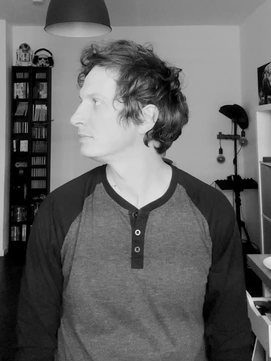

STUDIO / CONCEPT 01Less noise.
More nature.
More nature.
Altmärker Jung, Musiker und
Frontend-Entwickler. Ich gestalte
und entwickle Websites mit Gefühl.
Von der ersten Idee bis zur fertigen Website.
Klar im Design. Sorgfältig entwickelt.

Marken & Organisationen
Webdesign & Entwicklung · Logo & Identität · Printdesign
Du kennst dein Thema. Ich kümmere mich darum,
dass es im Web seinen Platz bekommt.
Web · Logo · Print
Eine neue Website, ein Logo oder etwas für Papier? Erzähl mir, was du vorhast.
Schreib mirhello@felixeisenhuth.de